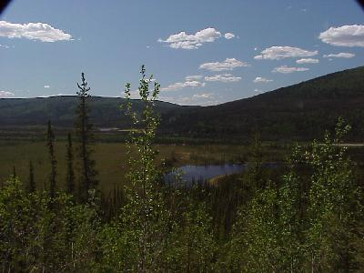
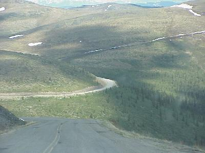
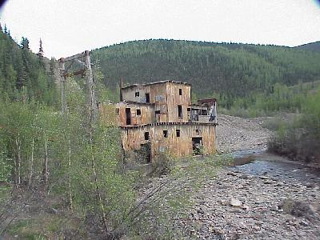
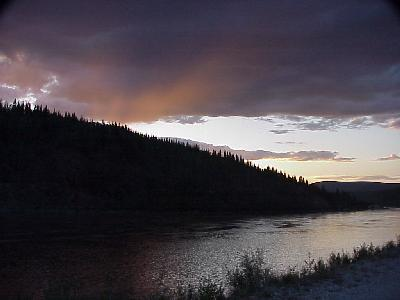

June 9, 6392 miles
| What, yet another great day, sun, a few clouds, mid 60's and a few low 70's. It did rain for about 4 minutes. | |
| Wonderful views of the mountains, forests, and countryside. It looks much greener than it did just a few days ago when we took some of these roads on the way to Anchorage. |  |
| Our road was one a little less traveled today. About 100 miles of gravel, dusty gravel, dusty dusty gravel. The portion of the road in Canada is called the Top of the World Highway, and really offered some fantastic views - you can see the road extending out for miles in front of you, crossing ridge after ridge. |  |
| Many of these roads to Dawson City were built for the support and mining of gold. Chicken, Alaska was one such town. Along the road there are remnants of the old mining activities, such as this gold dredge. |  |
| Into Dawson City. We got to town in time to do the Gaslight Follies and Diamond Tooth Gerties (tourist traps - we are tourists). At 2:00 AM, while I was typing this page, it is still light out- side, I am talking about read the newspaper light (if you can stand the mosquitos). This picture was taken at midnight (I did take one at 2:00 AM, but the sky was clear). |  |
| We pulled into Dawson City at 7:00, after
traveling 367 dusty miles. The first order of business,
for the evening, is - shower. Wildlife for the day included: fox (1). Somewhat of a disapointment, but the trees are now almost all leafed out, cutting visibility into the wooded and brushy areas. |
|